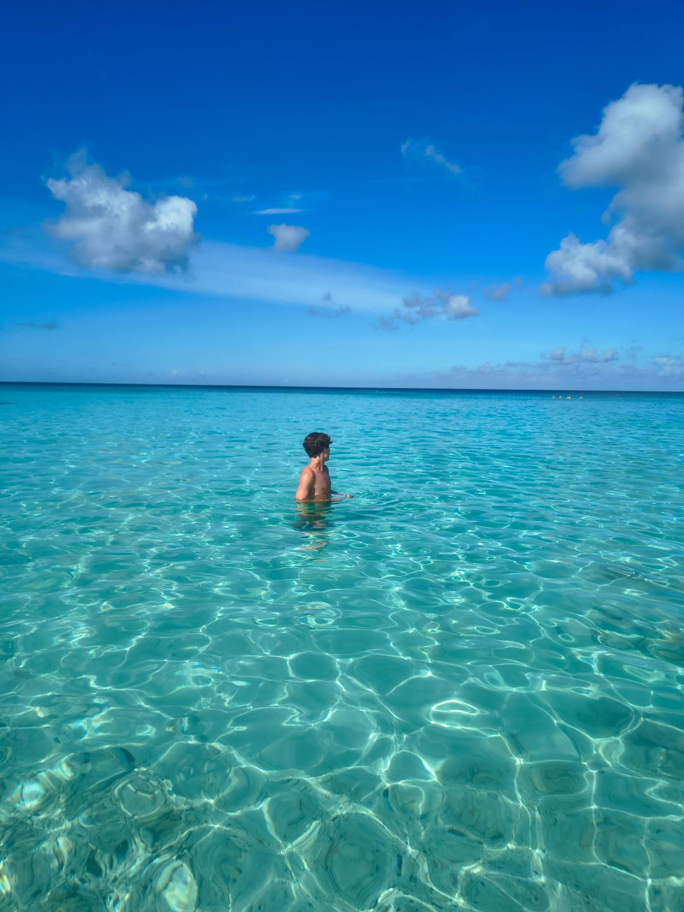

2024 · 1º ano
Abrir no Canva ↗
Quem sou eu?
Prazer, Arthur Macucci.
Tenho 18 anos e moro no Estreito, na Grande Florianópolis. Sempre gostei de lidar com computadores e tecnologia, porém ao conhecer mais sobre a área, descobri que não queria seguir carreira, pois não passava de um hobby. No meu tempo livre, gosto de praticar esportes, treinar na academia, jogar videogame e aproveitar o fim de semana na praia com meus amigos. Também valorizo muito minha fé e minha rotina em família.

Sobre mim, em resumo
Um pouco mais sobre mim
Escola / turma
SESI — 3º ano do Ensino Médio
O que mais gosto de estudar
Matemática e História
Fora da escola
Treinar e Jogar Videogame
Meu objetivo este ano
Entrar na faculdade e no Exército Brasileiro
Currículo
Minha trajetória
Formação
[2014 — 2023]
Colégio Visconde de Porto Seguro
Fundamental 1 e 2
[2024 — 2026]
SESI / SENAI
Ensino Médio - 1° ao 3° ano
Cursos e experiências extras
[2025]
Administração em Aprendizagem Industrial
Curso de 1 ano realizado no SESI/SENAI
[2025]
Jovem Aprendiz
Experiência de trabalho na rede FarmaSesi na área de ADM
Habilidades
Facilidade de Aprendizado
Trabalho em Equipe
Afinidade com Tecnologia
Raciocínio Lógico
Idiomas
Português
Nativo
Inglês
Avançado
Atividades
Explore por área do conhecimento
Cada área reúne as atividades organizadas por trimestre, com fotos, links e as habilidades desenvolvidas em cada uma.
Área 01
Matemática
Atividades, registros e evidências de aprendizagem em Matemática.
Área 02Natureza
Ciências da Natureza: experimentos, pesquisas e projetos.
Área 03Linguagens
Produções textuais, leituras, artes e comunicação.
Área 04Humanas
História, Geografia, Filosofia e Sociologia.
Área 05Técnico
Projetos técnicos, tecnologia e atividades práticas.
Minha evolução
Portfólios anteriores
Aqui estão os portfólios que fiz nos anos anteriores, para acompanhar como meu trabalho evoluiu ao longo do Ensino Médio.
2025 · 2º ano
Portfólio 2025